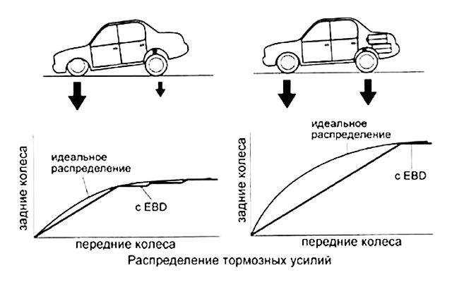

Процесс распределения тормозных усилий
Распределение тормозных усилий по осям автомобиля:

На практике работа электронной системы распределения тормозных усилий EBD представляет собой цикл, схожий с работой системы АБС и состоящий из следующих этапов:
- Анализ и сравнение тормозных усилий. Выполняется блоком управления ABS для задних и передних колес. В случае превышения заданной величины в работу включается алгоритм действий, предустановленный в памяти блока управления ЕБД
- Закрытие клапанов для удержания заданной величины давления в контуре колеса. Система определяет момент начала блокировки колеса и фиксирует давление на текущем уровне
- Открытие выпускных клапанов и уменьшение давления. Если риск блокировки колес сохраняется, блок управления открывает клапан и уменьшает давление в контурах рабочих тормозных цилиндров
- Повышение давления. Когда угловая скорость колеса не превышает пороговое значение блокировки, программа открывает впускные клапана и таким образом повышает давление в контуре, создаваемое водителем при нажатии на педаль тормоза
- В момент начала блокировки передних колес система распределения тормозных усилий выключается, и в работу включается ABS
Таким образом, система непрерывно контролирует и наиболее эффективно распределяет тормозные усилия на каждом колесе. При этом если в автомобиле перевозится багаж или пассажиры на задних сидениях, распределение усилий будет осуществляться более равномерно, нежели при сильном смещении центра тяжести в переднюю часть автомобиля.